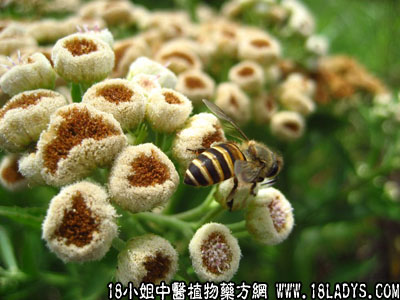

烟樨(中药材植物名:阔苞菊)(植物科目:菊科)

别名：栾樨、苑樨。
植物名：阔苞菊。
生长环境：本品为灌木。喜生于潮水能达到的地方。
分布：广东珠江三角洲一道均产。此外，亚洲热带各地沿海地区亦有分布。
入药部分：根。
采集期：全年采根、叶，冬采花。
自采地点：家种。
性味：性平、味甘、气芳香。
功能：化气、去湿、消坚散核。
主治、用量和用法：1、痰火核：用干根1～2两，猪瘦肉适量清水煎服；2、胃痛：用法同1；3、气痛：用法同1；4、疝痛，配伍用；5、花柳骨痛：用干根2～4两，清水煎服或加猪瘦肉同煎服。
验方1（治痰火核方）：烟樨根1两、簕茨菇5钱、清水三碗，煎成一碗，或加猪瘦肉同煎服。
（方解）烟樨根化气、除痰、消坚散核；簕茨菇化气，单用亦能散核，合之则功用更大。
（方歌）痰火核成肝郁因，能疗斯疾烟樨根，簕茨菇应同加入，消坚散结力千斤。
验方2（治疝气方）：烟樨叶（根亦可用）1两、黄皮根1两，清水四碗，煎成一碗，或加猪瘦肉同煎服。
（方解）:烟樨叶化气祛湿，黄皮根化气，相辅为用，化气之力更大。治疝气之分者，有效。
附录：（叶）清热、平肝、去积、化气除痰。民间习惯于农历四月初八日用烟樨叶和米粉、黄糖制成烟樨饼食，或加使君子叶、白花蟛蜞草、白毛鸡屎藤叶等制成。
（花）治小肠疝气。